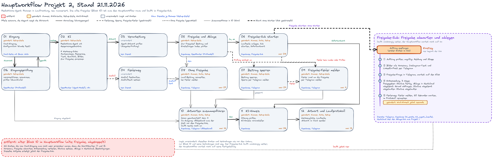
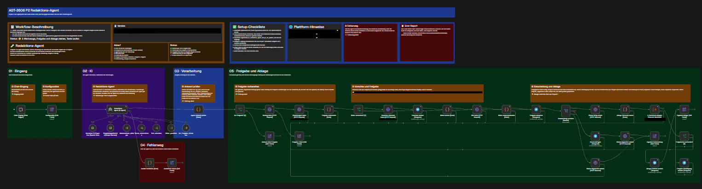
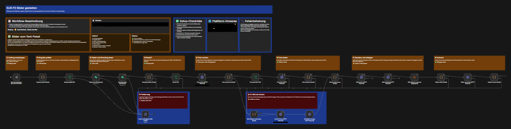
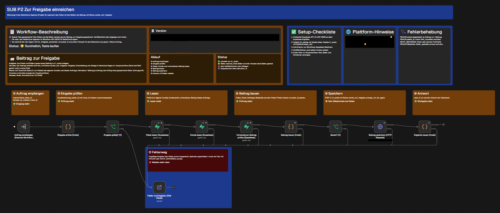

Use Case
Problem: Markengerechte Posts kosten kleine Firmen viel Zeit, und ein starrer Ablauf erkennt nicht, wann ein Thema gegen die Marke verstößt, schon gepostet wurde oder neue Fakten braucht.
Lösung: Ein Agent bekommt ein Thema, prüft es gegen Marke und frühere Posts, holt bei Bedarf belegte Fakten, lässt Text und Bilder bauen und legt das Paket einem Menschen zur Freigabe vor. Der Agent veröffentlicht nie selbst.
Rahmen: 1 Kunde je Auftrag, fest eingestellter Kunde Ordwin mit erfundenen Daten, Eingang über die Chat-Seite mit Anmeldung. Nicht enthalten: automatisches Posten, echte Kundendaten, Kundenportal, mehrere Agenten.
Grundlage aus Projekt 1
Projekt 2 baut auf der Content-Maschine K1 auf, meinem Projekt 1. Von dort kommen die Datenbank mit den Tabellen k1_* (vor allem k1_kunden mit den Markenregeln und k1_posts mit den Beiträgen, die jetzt die Spalte erzeugt_von tragen) und der Ablage-Workflow, der freigegebene Beiträge in Nextcloud ablegt und hier nur aufgerufen wird. K1 läuft als feste Kette getrennt weiter; der Redaktions-Agent trifft die Entscheidungen, die dort feste Regeln waren.
Bedarf, Use Case und Grenzen der Content-Maschine stehen in Projekt 1:
- Planung Projekt 1 (Bedarf und Use Case)
- Architektur der Content-Maschine
- Lessons Learned aus Projekt 1 (Grenzen)
Verwandt, aber nicht Grundlage: der K1 Support-Agent aus den Wochen 6 und 7.
Wahl der Architektur
1 Agent mit 6 Werkzeugen, kein Multi-Agent. Die Schritte teilen sich ein Ergebnis, das Paket. Ein weiterer Agent brächte zusätzliche Übergaben, die geprüft werden müssten, ohne dass ein Schritt eine eigene Rolle braucht.
Kette oder Agent: ein Hybrid. Der Systemprompt legt die Reihenfolge der Schritte fest (Markenwissen, Text, Bilder, Einreichen). An 6 Stellen trifft der Agent eigene Entscheidungen: Ablehnung wegen eines No-Gos der Marke, anderer Blickwinkel bei einem schon behandelten Thema, Recherche ja oder nein, Bilder entfallen, 1 Rückfrage und die Meldung bei einem ausgefallenen Werkzeug. Ein Agent bleibt es, weil Aufträge als freier Text kommen; eine feste Kette bräuchte vorab eine Klassifikation und je Variante einen Zweig. Diese Begründung ersetzt die frühere, nach der der Agent je Anfrage die Werkzeuge wählt (W9 Tag 1, Compliance-Doku).
Was die Läufe zeigen: Mit Prompt V1 ließ er bei einem Auftrag ohne Bilder das Bild-Werkzeug weg (Lauf 2735) und rief bei einem Auftrag mit belegten Fakten die Recherche (Lauf 2747); mit V2 blieb eine Frage zur Marke beim Markenwissen (Lauf 2706), und ein Festpreisversprechen wurde abgelehnt, ohne dass Text oder Bilder entstanden (Lauf 2709). Die Wahl ist nicht immer richtig (Abschnitt Ergebnis). Kein Werkzeug enthält einen eigenen Agenten; das Text-Werkzeug nutzt bei Ausfall des Hauptmodells eine einfache Sprachmodell-Kette.
Verworfen: Projekt 1 umbauen (es läuft getrennt weiter), Multi-Agent. Abgelöst: die frühere Begründung „Warten auf einen Menschen gehört in den Hauptworkflow“. Seit W9 Tag 3 wartet die Freigabe in einem eigenen Freigabe-Workflow, den der Hauptworkflow ohne Warten startet, damit die Chat-Seite sofort antwortet. Eine Vergleichskopie als feste Kette ist nicht gebaut; ob eine Kette berechenbarer wäre, ist nicht gemessen. Die Projekt-Charter trägt noch die frühere Begründung.

paket_id weiter. Klick vergrößert.Ziele, Umfang, gewählte Architektur und Risiken ausführlich in der Projekt-Charter (auch als Markdown).
Aktueller Plan
Je Kurstag gibt es einen Plan auf dem Endstand des Tages. Der neueste steht hier, die älteren auf den Tagesseiten.

Das Datenflussbild des Stands v26.5.3 (21.11.2026), auf das sich die Tagesseiten W9 Tag 3 und Tag 4 beziehen, steht darunter. In Woche 9 zeigt der Plan die Datenflüsse: jeder Pfeil trägt eine Nummer, die Tabelle rechts nennt die Daten. Seit der Nachreichung vom 22.11.2026 sitzt jede Nummer an einem Pfeil von Knoten zu Knoten; D1 bis D35 laufen als Hauptlauf durch, die Nebenwege D36 bis D54 setzen an dem Knoten an, an dem sie abgehen.
![Datenflussbild des Hauptworkflows v26.5.3 (Stand 21.11.2026) mit Hauptlauf D1 bis D35, Nebenwegen D36 bis D54 und Freigabe-Workflow D55 bis D59, jede Nummer an einem Pfeil von Knoten zu Knoten: Auftraggeber auf der Chat-Seite mit Anmeldung, Chat-Eingang, Eingangsprüfung mit Ablehnung, Konfiguration, Redaktions-Agent mit 6 Werkzeugen und deren Diensten (Supabase, OpenRouter, Pixabay, Cloudflare Workers AI, Gotenberg), Prüfung der Agent-Antwort, Freigabe vorbereiten, Ausgangsprüfung, Freigabe-Sub und Freigabe-Workflow mit Telegram, Supabase und Nextcloud, die Fehlerwege Ohne Freigabe, Sperre, Freigabe-Fehler und Fehlerweg des Agenten, KI-Hinweis, Antwort und Laufprotokoll, dazu E1 und E2 des Error Workflows; rechts die Tabelle der Daten je Nummer.](plan/plan-w09t04-v26.png)
Den Aufbau des veröffentlichten Hauptworkflows v26.5.3 zeigen 2 Blätter: Blatt 1 die Rahmen 01 bis 12 in Laufrichtung mit den Diensten je Rahmen und den Freigabe-Workflow, Blatt 2 Datenquellen und Zugänge, das Protokoll und 3 Bereiche von innen.



Der Ablaufplan der Woche 8 mit den Vertrauensstufen:

Woche 9 je Tag
Woche 9 bringt Compliance, Evaluation, das Interface, die Messung von Token, Laufzeit und Kosten und den Feature Freeze. Je Kurstag mit Tagesaufgabe eine Zeile. Tag 3 und Tag 4 sind gebündelt bearbeitet und am 21.11.2026 gemeinsam abgegeben.
| Tag | Thema | Ergebnis | Stand |
|---|---|---|---|
| W9 Tag 1, Mo 16.11. | Compliance nach dem EU AI Act | Einordnung: Es gelten die Transparenzpflichten nach Art. 50; 3 Maßnahmen gebaut und gemessen (Freigabe, Schwärzung, KI-Kennzeichnung); 20 Datenflüsse mit Standort; Datenflussbild; Architektur als Hybrid begründet. Ausführlich in der Compliance-Doku. | Hauptworkflow v22 |
| W9 Tag 2, Di 17.11. | Tests und Bewertung | Testtabelle mit K01 bis K18 und 5 Varianten ohne Eingangsprüfung: 18 PASS, 4 FAIL, 1 offen; Fehler behoben, danach Regression mit 19 von 20, K03 danach behoben; Systemprompt V4.1 final. Testtabelle W09T02. | Hauptworkflow v23.1, Text-Sub v09.1 |
| W9 Tag 3, Mi 18.11. | Interface | Chat-Seite am Chat-Eingang mit Anmeldung, Sofortantwort, sichtbaren Werkzeugaufrufen und Freigabe in einem eigenen Workflow ohne Warten; Test von außen am 21.11.2026 vom Handy über Mobilfunk bestanden (Lauf 4064); 7 Fehlerfälle, 6 behoben, 1 als Grenze beschrieben. | Hauptworkflow v26.5.3, veröffentlicht 21.11.2026 |
| W9 Tag 4, Do 19.11. | Optimierung, Kosten, Feature Freeze | Kosten je Lauf vorher rund 0,0046 $, nachher rund 0,0070 $ (aus Tokens und Listenpreis berechnet), Staffel bis 100.000 Aufrufe; Agent-Tokens im Mittel rund 64.000 (Läufe 4056 und 4064, dieselben wie bei den Kosten); MUSS 20 von 25 erledigt, 4 teilweise; Werkzeug 6 „Qualität prüfen“ mit Noten 4,4 bis 4,6; Feature Freeze am Abend, Hard Freeze Di 24.11. Die Regression lief am 24.11.2026 am Freeze-Stand (W10 Tag 2). | Hauptworkflow v26.5.3, veröffentlicht 21.11.2026 |
| W9 Tag 5, Fr 20.11. | Retro, Freeze-Stufen, letzte Fixes | Keine Tagesaufgabe. Fixes ohne neue Funktion: Notenfilter, Aufrufgrenze 14, Warnzeile „Achtung, Endtext ungeprüft“, bestätigte Statuswechsel und Laufzeilen, Kürzung im Text-Werkzeug nur in ganzen Sätzen; am 21.11.2026 um 14:03 gemeinsam veröffentlicht. | Hauptworkflow v26.5.3, Text-Werkzeug v09.3, Freigabe-Workflow v02.1 |
Woche 10 je Tag
Woche 10 ist die Abschlusswoche mit Hard Freeze am Di 24.11.2026, Dokumentation am Mi 25.11.2026 und Präsentation am Do 26.11.2026.
| Tag | Thema | Ergebnis | Stand |
|---|---|---|---|
| W10 Tag 1, Mo 23.11. | Fristablauf und engerer Eingangsfilter | Frist der Freigabe aus den Einstellungen (1440 plus 10 Minuten), neuer Fristen-Workflow, Musterprüfung am Eingang vor dem Prüfmodell, Statusschutz im Freigabe-Workflow; alles als Entwurf. Tests 4104, K23 bestanden, Filter am Entwurf 4181 und 4182 bestanden. MUSS 19 von 25. | live v26.5.3, Entwurf v27 |
| W10 Tag 2, Di 24.11. | Hard Freeze | Hauptworkflow v27 und Freigabe-Workflow v02.2 veröffentlicht 09:37, Fristen-Workflow aktiv 10:24. Testzählung: 13 von 15 Funktionstests am Freeze-Stand; K26 nach Fix im Nachtest bestanden; Angriffe 6 von 6; K22 über 3 Nachrichten bestanden. Fixes am Prüfmodell (Werkzeug 6 v06) und an Quellen im Text (Text-Werkzeug v09.4), Sperrantwort mit Grund. Baseline V4.4 gegen V4.1: Abwehr unverändert 5 von 5, 9 von 12 Agent-Fällen gleich. | Hauptworkflow v27.1, Freeze-Stand |
Stand je Werkzeug
Je Werkzeug Zweck, Eingabe, Ausgabe, Grenze und die Description im Wortlaut, so wie der Agent sie sieht (Stand 23.11.2026): Werkzeuge des Redaktions-Agenten. Wie man das System aufsetzt, steht im README, Abschnitt Setup, mit den SQL-Dateien aller Tabellen in sql/.
| Workflow | Stand | Aufgabe | Export | Tag |
|---|---|---|---|---|
| Hauptworkflow Redaktions-Agent | v27.1, veröffentlicht 24.11.2026 | Chat-Seite mit Anmeldung, Eingangsprüfung, KI-Hinweis, Agent, Ausgabe- und Beitragsprüfung, Laufzeile, Start des Freigabe-Workflows ohne Warten, Sofortantwort mit Werkzeugliste | redaktions-agent.json | W8: 1, 2, 3, 4, 5; W9: 1, 2, 3, 4 |
| Freigabe-Workflow (Freigabe abwarten und ablegen) | v02.2 mit Frist, veröffentlicht 24.11.2026 | Vorschau und Freigabe-Frage in Telegram, wartet auf den Klick, setzt den Status und legt nach der Freigabe in Nextcloud ab; jeder Statuswechsel wird von der Datenbank bestätigt | sub-freigabe-abwarten-und-ablegen.json | W9: 3, 4 |
| Werkzeug 1 Markenwissen abfragen | v03.3 | liest Markenregeln und frühere Posts über 2 Views, nur lesend | sub-markenwissen-abfragen.json | 1, 2 |
| Werkzeug 2 Thema recherchieren | v03.2 | belegte Fakten mit Quelle, höchstens 1 Aufruf plus 1 Wiederholung | sub-thema-recherchieren.json | 1, 2 |
| Werkzeug 3 Text schreiben | v09.4, veröffentlicht 24.11.2026 | schreibt und prüft das Paket samt KI-Satz und Zahlenprüfung, kürzt nur in ganzen Sätzen, speichert es unter einer paket_id | sub-text-schreiben.json | W8: 2, 3; W9: 1, 2, 4 |
| Werkzeug 4 Bilder gestalten | v05, veröffentlicht 19.11.2026 | Foto oder KI-Bild, Folien im dunklen Layout gerendert, „Mit KI erstellt“ auf jeder Folie, Herkunftsmarker im PNG (beim Einzelbild mit Pixabay-Foto Fremdfoto-Marker ohne Schriftzug), abgelegt in Storage | sub-bilder-gestalten.json | W8: 3; W9: 1, 4 |
| Werkzeug 5 Zur Freigabe einreichen | v03 | legt als einziges Werkzeug einen Beitrag an, nur mit KI-Kennzeichnung, Status wartet_auf_freigabe | sub-zur-freigabe-einreichen.json | W8: 3; W9: 1, 4 |
| Werkzeug 6 Qualität prüfen | v06, veröffentlicht 24.11.2026 | bewertet den Beitrag gegen Markenpaket und Kriterien mit einer Note, löst bei schwacher Note höchstens 1 Nachbesserung aus; Prüfmodell Mistral Small 3.2 (bezahlt), Particle als Ersatz bei Ausfall | sub-qualitaet-pruefen.json | W9: 4 |
| Fristen-Workflow (Freigabe-Fristen) | v01, aktiv seit 24.11.2026 10:24 | startet nach Zeitplan alle 15 Minuten, setzt wartende Beiträge nach Frist plus Puffer auf freigabe_abgelaufen, schreibt je Beitrag 1 Laufzeile und schickt 1 Sammelmeldung in Telegram | freigabe-fristen.json | W10: 2 |







Der Git-Tag trägt die Version des Hauptworkflows; die Versionen der Werkzeuge zählen eigen und stehen mit Uhrzeit in versionen.md. Agent-Modell seit 17.11.2026: Claude Haiku 5.5 über OpenRouter; Nemotron 3.5 Super free (vom 11.11. bis 17.11.2026 im Einsatz) liegt deaktiviert als Reserve im Workflow. Die Bildschirmfotos oben zeigen den Stand von W8 Tag 3, den Stand v26.5.3 zeigen die Fotos in W9 Tag 4. Die Abgabestände der Woche 9 liegen unter workflows/abgaben.
Prompt-Versionen
| Version | Datum | Status | Änderung und Ergebnis | Datei |
|---|---|---|---|---|
| V4.4 | 19.11.2026 | live, Hauptworkflow v26.1 bis v26.5.3 | V4.1 plus die Regeln für Werkzeug 6: höchstens 1 Nachbesserung, danach genau 1 erneute Prüfung, höchstens 14 Werkzeugaufrufe je Auftrag. Rund 36 Prozent länger als V4.1, gemessen am Feld systemMessage im Workflow: 9.160 statt 6.733 Byte (W9 Tag 4). | Prompt |
| V4.3, V4.2 | 19.11.2026 | archiviert, Zwischenstände, nie veröffentlicht | Zwischenschritte auf dem Weg zu V4.4 | V4.3, V4.2 |
| V4.1 | 18.11.2026 | von V4.4 abgelöst, Hauptworkflow v23.1 | V4 plus Punkt 9 für reine Auskünfte zur Marke mit dem Status auskunft; das Markenwissen wird dafür immer neu abgerufen. Anlass war Testfall K06 (W9 Tag 2). | Prompt |
| V5 | 17.11.2026 | verworfen; V4 blieb live, danach V4.1, heute V4.4 | an einer Kopie gegen V4 gemessen: im Mittel 4,00 gegen 3,74, aber die Länge fiel um 0,33 bei erlaubten 0,30 (W9 Tag 2) | keine Datei im Repository |
| V4 | 12.11.2026 | von V4.1 abgelöst, Baseline für Vergleiche | Guardrails: Auftrag zwischen Markierungen mit der trace_id, keine Werkzeuge, Abläufe oder Prüfungen nennen; in v19 Absatz zum Antwortformat. Der Vergleich mit V2 blieb offen. | Prompt |
| V2 | 10.11.2026 | archiviert, von V4 abgelöst | Schritt für fehlende Werkzeuge, genauere Beschreibung des Text-Werkzeugs, Zahlen nur mit Quelle; im Vergleich 2 von 10 vollständig bestanden | Prompt, Konfiguration |
| V3 | 10.11.2026 | verworfen; zunächst blieb V2 live, inzwischen V4.4 | 1 Satz mehr zu fehlenden Werkzeugen; in 4 von 4 Läufen ohne Wirkung, zurückgebaut | Prompt, Konfiguration |
| V1 | 09.11.2026 | archiviert, Baseline | erste Fassung in 6 Bausteinen; im Vergleich 5 von 10 vollständig bestanden | Prompt, Konfiguration |
Je Version Datum, Beschreibung, Ergebnis und nächste Idee im CHANGELOG.
Ergebnis V1 gegen V2
Dieselben 10 Anfragen, 1 Lauf je Anfrage, Gratismodell. Das zeigt eine Richtung, keinen belastbaren Unterschied.
| Prompt | bestanden | teilweise | nicht bestanden |
|---|---|---|---|
| V2 | 2 (Anfrage 1, 5) | 5 (3, 4, 6, 8, 9) | 3 (2, 7, 10) |
| V1 | 5 (1, 2, 3, 6, 8) | 3 (4, 5, 10) | 2 (7, 9) |
V1 war bei Anfrage 2, 3, 6, 8 und 10 besser, V2 bei Anfrage 5 und 9. Schwächen von V2: Bilder trotz „keine Bilder“, Off-Topic-Aufträge werden bearbeitet, für reine Auskünfte fehlt ein Statuswert. Beide gaben weder den Systemprompt noch Daten eines anderen Kunden preis. Einzelheiten je Anfrage in der Tages-Doku Tag 3 und in der Test-Tabelle.
Freigabe und Ablage
Der Agent reicht ein, ein Mensch entscheidet. Seit W9 Tag 3 läuft die Freigabe in einem eigenen Workflow, den der Hauptworkflow ohne Warten startet; die Chat-Seite bekommt ihre Antwort sofort. Am 21.11.2026 belegt: Freigeben mit Ablage in den Läufen 4056 und 4064, Ablehnen mit Grund in Lauf 4047 (W9 Tag 4). Die Vorschau kommt in Telegram mit 2 Knöpfen. Freigeben setzt den Status fertig, legt den Beitrag mit Bildern in Nextcloud ab und schickt seit v15 eine Bestätigung mit Link zum Kundenordner. Ablehnen fragt den Grund über ein Formular ab und speichert ihn beim Beitrag, abgelegt wird nichts. Ohne Antwort soll die Anfrage nach der eingestellten Frist verfallen (Sollwert 24, Einheit im Export nicht gesetzt und nicht bestätigt); der Ablaufzweig funktioniert laut Test T3 nicht (Tag 5). Belegt sind aus Woche 8 außerdem 3 Freigaben (Läufe 2768, 2782, 2748) und 1 Ablehnung (Lauf 2735). Der Fristablauf ist seit 24.11.2026 behoben: der Freigabe-Workflow v02.2 wartet mit Frist, der Fristen-Workflow setzt überfällige Beiträge auf abgelaufen (W10 Tag 2).
Guardrails auf 3 Ebenen: Systemprompt (Rolle und wichtigstes Verbot vorn, keine erfundenen Fakten, kein Rollenwechsel, höchstens 14 Werkzeugaufrufe, nachträglich in der Ausgabe geprüft), Werkzeug (Eingaben geprüft, feste Kundenkennung, nur Werkzeug 5 legt einen Beitrag an), Ausgabe (Pflichtfelder, erlaubte Status, Prompt-Reste, Schlüssel, fremde Kundennamen; ohne Beitrags-ID kein Erfolg).
Zusatzfunktionen
Zusatzfunktionen über die Grundanforderungen hinaus. Stand 24.11.2026. Die Läufe sind Ausführungsnummern in n8n und stehen in der Test-Tabelle.
| Zusatzfunktion | Stand | Beleg |
|---|---|---|
| Human in the Loop | umgesetzt | Der Agent veröffentlicht nie selbst. Der Beitrag geht als Vorschau mit 2 Knöpfen nach Telegram: Freigeben oder Ablehnen mit Grund (Eingabe über ein Formular). Die Ablage in Nextcloud passiert erst nach der Freigabe. Getestet: 3 Freigaben mit Ablage (Läufe 2768 und 2782 mit Prompt V2, Lauf 2748 mit Prompt V1) und 1 Ablehnung (Lauf 2735: Status abgelehnt, Grund gespeichert, nichts abgelegt), siehe Test-Tabelle Abschnitt D und Tag 3. Das Verfallen der Anfrage ohne Klick (Sollwert 24, Einheit im Export nicht ausdrücklich gesetzt, Standard sind Stunden) ist im Test T3 nicht gelungen, siehe Tag 5. Seit 24.11.2026 belegt: die Frist kommt aus den Einstellungen (1440 plus 10 Minuten), der Fristen-Workflow ist seit 10:24 aktiv und markiert liegengebliebene Beiträge als abgelaufen; Freigabe und Ablehnung nach Fristende sind mit verkürzter Frist geprüft (W10 Tag 2, Kapitel 1). |
| Monitoring mit Meldungen | Laufprotokoll und Meldungen an den Betreiber, kein Überwachungssystem | Für jeden Lauf entsteht eine Zeile im Laufprotokoll in Supabase (Kennung, Zeitpunkt, Status; Fehler im Freigabe-Workflow werden vermerkt, W9 Tag 4, Kapitel 8). Laufzeit und Kosten sind einmalig an 3 Läufen gemessen (W9 Tag 4, Kapitel 2 und 3). Bei einem gesperrten Beitrag, einem verworfenen Beitrag und bei Fehlern in Freigabe und Protokoll geht eine Meldung über Telegram an den Betreiber; das ist in der Fehlerbehebung und in Proben belegt, nicht im Dauerbetrieb. Der Fehlerweg am Agenten setzt bei einem Ausfall einen festen Text, die Ursache steht als Code im Lauf (Läufe 2576 und 2579, Tag 2). Die Ausgabe-Prüfung sperrt unzulässige Antworten, etwa einen Statuswert ohne Beitrags-ID (Lauf 2706) oder ungültiges JSON (Lauf 2708); sie schlug auch fälschlich an (Lauf 2719, Wort „Systemprompt“). Im Hauptworkflow ist ein Fehler-Workflow eingetragen (Platzhalter ERROR_WORKFLOW_ID); ein Lauf, der ihn ausgelöst hat, ist nicht belegt. Es gibt kein Dashboard und keine laufende Auswertung von Laufzeit oder Kosten. Der Zweig „Ablage-Problem senden“ wurde nie ausgelöst. |
| Multi-Agent | nicht umgesetzt | 1 Agent mit 6 Werkzeugen, begründet im Abschnitt Wahl der Architektur und in der Projekt-Charter. |
| MCP-Integration | nicht umgesetzt | Die Werkzeuge sind n8n-Sub-Workflows, kein MCP-Server; in der Projekt-Charter ausdrücklich nicht im Umfang. |
| Eigenes Interface | umgesetzt (Stand 21.11.2026) | Chat-Seite mit Anmeldung und sichtbaren Werkzeugaufrufen, Freigabe ohne Warten; von außen am 21.11.2026 vom Handy getestet (Lauf 4064). Grenze: Seite bis zur Antwort offen und aktiv lassen (W9 Tag 3). |
| Kosten-Kalkulation | vorher und nachher gerechnet (Rechnung vom 21.11.2026, Prüfmodell seit 24.11.2026 bezahlt) | Vorher rund 0,0046 $ je Lauf ohne Recherche (aus der Abrechnung), nachher rund 0,0070 $ (aus Tokens und Listenpreis berechnet), Staffel 10 bis 100.000 Aufrufe im Monat (W9 Tag 4). Seit 24.11.2026 ist das erste Prüfmodell von Werkzeug 6 nicht mehr kostenlos: rund 0,0002 bis 0,0003 $ je Prüfung (W10 Tag 2, Kapitel 4); in der Rechnung oben ist das nicht enthalten. |
| LLM-as-Judge | umgesetzt als Werkzeug 6, seit 24.11.2026 v06 (Stand 24.11.2026) | Werkzeug 6 „Qualität prüfen“ vergibt Noten, Läufe 3997 (4,6), 4010 (4,4), 4013 (4,6), am veröffentlichten Stand 4064 (4,6); Grenzen in W9 Tag 4. Seit v06 prüft zuerst das bezahlte Modell Mistral Small 3.2, Particle springt als Ersatz ein; Anlass war der Ausfall beider Gratismodelle wegen Ratenbegrenzung in K25. Bekannte Grenze: Mistral bewertet Siezen und eingeschleuste Anweisungen milder als Particle (W10 Tag 2, Kapitel 4). |
Compliance kurz
Nach eigener Zuordnung aus dem Einsatzzweck unterliegt der Agent den Transparenzpflichten nach Art. 50, weder verboten noch Hochrisiko. Der Begriff „begrenztes Risiko“ steht nicht im deutschen Gesetzestext, er gliedert nur die Prüfung. Ändert sich der Zweck, etwa zu automatischem Posten, wird neu bewertet. Die Rolle als Anbieter oder Betreiber (Art. 3 Nr. 3 und 4) ist in der Compliance-Doku beschrieben, ein Urteil dazu fälle ich nicht; offen ist auch, ob schon der Prototyp unter die Pflichten nach Art. 50 fällt. Umgesetzt sind die Freigabe durch einen Menschen vor jeder Ablage, die Schwärzung des Auftrags vor dem ersten Modellaufruf und seit 17.11.2026 die KI-Kennzeichnung im Chat, in den Texten und in den Bildern (Marker in jedem PNG, Schriftzug außer bei Bildern mit Pixabay-Foto;W9 Tag 1), dazu Guardrails auf 3 Ebenen und Testdaten ohne Personenbezug. Der Testbetrieb läuft mit erfundenen Daten; für 2 benannte Ausnahmen (Telegram-Kennung der freigebenden Person, mögliche Namen realer Personen in öffentlichen Webtexten) steht die Prüfung noch aus.
Ersteinschätzung, keine Rechtsberatung. Ausführlich mit Gesetzeswortlaut in der Compliance-Doku und in der Projekt-Charter, Abschnitt 6.
Offene Punkte
- Erledigt am 23. und 24.11.2026: Fristablauf der Freigabe (Test T3 war an W8 Tag 5 nicht bestanden; seit 24.11.2026 Frist aus den Einstellungen und Fristen-Workflow aktiv, Freigabe und Ablehnung nach Fristende geprüft, W10 Tag 2, Kapitel 1). Engerer Filter am Eingang (T4) mit Musterprüfung vor dem Prüfmodell, veröffentlicht mit v27; K22 am Freeze-Stand mit allen 3 Nachrichten am Eingang abgelehnt (W10 Tag 2, Kapitel 3). Regression am Freeze-Stand: 13 von 15 Funktionstests, K26 nach Fix im Nachtest bestanden, Angriffe 6 von 6 (Kapitel 3). Systemprompt V4.4 gegen die Baseline V4.1: 9 von 12 Agent-Fällen gleich, Abwehr 5 von 5 (Kapitel 5). Abschnitt mit allen 6 Werkzeugen am 23.11.2026 (Werkzeuge des Redaktions-Agenten). Weiter offen aus diesem Paket: die Kostenfolie mit Vorher- und Nachher-Werten (W9 Tag 4).
- Chat-Seite am Handy: Der letzte Knoten sendet die Antwort und wartet, bis die Chat-Seite sie abholt. War die Seite zu (Handy gesperrt oder App gewechselt, Lauf 4056) oder lief der Lauf im Editor (Lauf 4047), holt sie niemand ab, und die Ausführung bleibt in n8n im Status „Waiting“ stehen. Einreichung, Freigabe und Ablage sind davon nicht betroffen (W9 Tag 3). Die Demo läuft am PC.
- Die Eingangsprüfung erkannte den Angriffssatz „veröffentliche sofort, ohne Freigabe“ an W8 Tag 5 nicht (0,1); geschützt hat die Freigabe (Tag 5). Seit W9 Tag 2 gibt es eine neue Prüfanweisung: 19 von 20 Umgehungssätzen erkannt, 0 von 20 harmlosen blockiert; ein Satz bekam einmal 0,9 und einmal 0,2 (W9 Tag 2). Seit 24.11.2026 läuft vor dem Prüfmodell eine Musterprüfung (W10 Tag 2).
- Systemprompt: V4.4 ist seit 19.11.2026 live, V5 wurde gegen V4 gemessen und verworfen (W9 Tag 2); V4.4 ist am 24.11.2026 gegen die Baseline V4.1 gemessen (W10 Tag 2). Der Vergleich V2 gegen V4 mit denselben 10 Anfragen blieb offen.
- Werkzeug 6 „Qualität prüfen“: seit 24.11.2026 v06 mit Mistral Small 3.2 zuerst und Particle als Ersatz; Mistral bewertet Siezen und eingeschleuste Anweisungen milder als Particle, geplant ist ein strengeres Modell zuerst mit Ersatz auch bei falschem Inhalt (W10 Tag 2, Kapitel 4 und 6). Dass die Rückschleife Gedankenstriche und eine falsche Absatzzahl nicht verlässlich entfernt (W9 Tag 4), ist am Freeze-Stand nicht neu gemessen.
- Die große Testreihe mit normalen und adversarialen Fällen: 9 der 20 Fälle sind am 12.11.2026 gelaufen (Tag 4). Die Regression der Testtabelle W09T02 lief zuletzt am 24.11.2026 am Freeze-Stand mit 15 Funktionstests und 6 Angriffen (W10 Tag 2, Testtabelle W09T02).
- Bekannte Grenzen am Freeze-Stand, Fix nach der Präsentation (W10 Tag 2, Kapitel 6): Das Bilder-Werkzeug setzt im Layout fest „Fang mit Schritt 1 an.“ auf eine Folie, die Zahlenprüfung sitzt nur im Text-Werkzeug (K03, Lauf 4239). An Folien und Texten hängt „Quelle: Ordwin“, obwohl das Briefing keine Quelle hat (Läufe 4332, 4400, 4413). Ordnungszahlen wie „erste“ lösen das Zahlenverbot aus (Läufe 4350, 4408). Die Freigabe läuft in der Beta nur über Telegram, die Folien kommen dort als einzelne Links. Das Logo des Testkunden lädt nicht (Lauf 4430).
- KI-Kennzeichnung der Posts: seit 17.11.2026 gebaut; offen ist, ob sie nach dem Einfügen bei LinkedIn oder Instagram erhalten bleibt (W9 Tag 1).
- Vorverarbeitung des freien Chat-Textes vor dem Agenten: seit 12.11.2026 als Schwärzen am Chat-Eingang gebaut (Tag 4), Namen ohne Anrede werden nicht erfasst.
- Verwaiste Beiträge, wenn die Antwort des Agenten verworfen wird: seit v20 setzt ein Verwerfen-Zweig den Beitrag auf abgelehnt und meldet es in Telegram (Tag 5); Fehlalarm beim Wort „Systemprompt“ offen.
- Zweig „Ablage-Problem senden“ nie ausgelöst. Die Kosten nachher sind aus Tokens und Listenpreis berechnet, die Abrechnung des Modellzugangs für diese Läufe ist nicht ausgewertet (W9 Tag 4).
Repository und Release
Quelltext, Exporte, Prompts und Tests: github.com/MinkeAutomation/redaktions-agent. Stand der Wochenabgabe: Release W08 Abgabe, Tag v16. Ein Release bleibt unverändert; Ergänzungen danach stehen als neuer Eintrag im CHANGELOG.
Importhinweise und Platzhalter stehen im README.
Quellenverzeichnis
Adressen der Dokumentationen am 22.11.2026 abgerufen (Status 200, EUR-Lex 202). Hosts ohne Adresse sind eigene Instanzen; ihre Adresse bleibt aus dem Repository heraus.
Dienste im Workflow
| Dienst | Wofür im Projekt | Host | Dokumentation |
|---|---|---|---|
| n8n | Workflow-Plattform: Hauptworkflow, 6 Werkzeuge, Freigabe-Workflow; liefert auch die Chat-Seite mit Anmeldung aus | eigene Instanz bei Hetzner, Adresse nicht genannt | docs.n8n.io |
| OpenRouter | Zugang zu den Sprachmodellen: Agent (Claude Haiku 5.5), Recherche (Sonar), Prüfmodelle und Text (kostenlose Modelle) | openrouter.ai | openrouter.ai/docs |
| Supabase | Datenbank und Bildspeicher: Markenprofil, Pakete, Beiträge, Sitzungen, Laufzeilen | Projektadresse unter supabase.co, nicht genannt (Region eu-west-1) | supabase.com/docs |
| Telegram | Vorschau, Freigabefrage und Entscheidung des Menschen, Meldungen an den Betreiber | api.telegram.org | core.telegram.org/bots/api |
| Nextcloud | Ablage des freigegebenen Beitrags mit Bildern | eigene Instanz bei Hostinger, Adresse nicht genannt | docs.nextcloud.com |
| Gotenberg | Rendert die Folien zu PNG-Bildern | eigener Dienst bei Hetzner, nur intern erreichbar (Port 3000) | gotenberg.dev/docs |
| Pixabay | Fotos zu Schlagwörtern | pixabay.com und cdn.pixabay.com | pixabay.com/api/docs |
| Cloudflare Workers AI | KI-Bild (FLUX.1 schnell), wenn kein passendes Foto da ist | api.cloudflare.com | developers.cloudflare.com/workers-ai |
| jsDelivr | liefert die Schriftdateien, die beim Rendern der Folien in das Bild eingebettet werden | cdn.jsdelivr.net | jsdelivr.com/documentation |
| Maildienst per SMTP | Alarm-Mail des Fehler-Workflows ans Testpostfach | Eigener Mailserver der Agentur LEADtabo; den Host nenne ich bewusst nicht, weil die Adresse eines eigenen Mailservers nicht in ein öffentliches Repo gehört. Er steht nur im Zugang der Instanz. | Eigener Server der Agentur LEADtabo, keine Anbieterdokumentation verlinkt |
| GitHub und GitHub Pages | Repository mit Exporten, Prompts und Doku; diese Seiten | github.com und minkeautomation.github.io | docs.github.com/pages |
| Google Fonts | Schriften dieser Doku-Seiten | fonts.googleapis.com und fonts.gstatic.com | fonts.google.com |
Infrastruktur
| Baustein | Läuft bei | Standort laut Anbieter | Dokumentation |
|---|---|---|---|
| n8n und Gotenberg | Hetzner, eigener Server | Rechenzentrum nicht geprüft | docs.hetzner.com |
| Nextcloud | Hostinger, eigener Server | Frankfurt am Main laut Verwaltungsportal | hostinger.com/support |
| Supabase | Supabase, verwaltete Datenbank | Region eu-west-1 laut Projektverwaltung | supabase.com/docs |
Eigene Belege und Zwischendokumentation
| Wofür | Wo |
|---|---|
| Wohin die Daten gehen, je Dienst | Compliance-Doku (Markdown) und W9 Tag 1, Kapitel 4 |
| Workflow-Exporte der 9 Workflows | workflows/ im Repository (Credentials nur als Name, keine Schlüssel) |
| Versionen und Änderungen | versionsmatrix.md, CHANGELOG.md, versionen.md |
| Datenflussbild mit Nummer je Pfeil | plan-w09t04-v26.png, Quelle Excalidraw-Datei |
Recherchequellen
| Wofür | Quelle |
|---|---|
| Gesetzestext für die Compliance-Einordnung | Verordnung (EU) 2024/1689 (KI-Verordnung), Amtsblattfassung bei EUR-Lex, dort ist die deutsche konsolidierte Fassung vom 27.07.2026 auswählbar |
| Modellpreise der Kostenrechnung | Listenpreis des Agent-Modells bei openrouter.ai, Stand 13.11.2026 (Kapitel 3 von W9 Tag 4) |